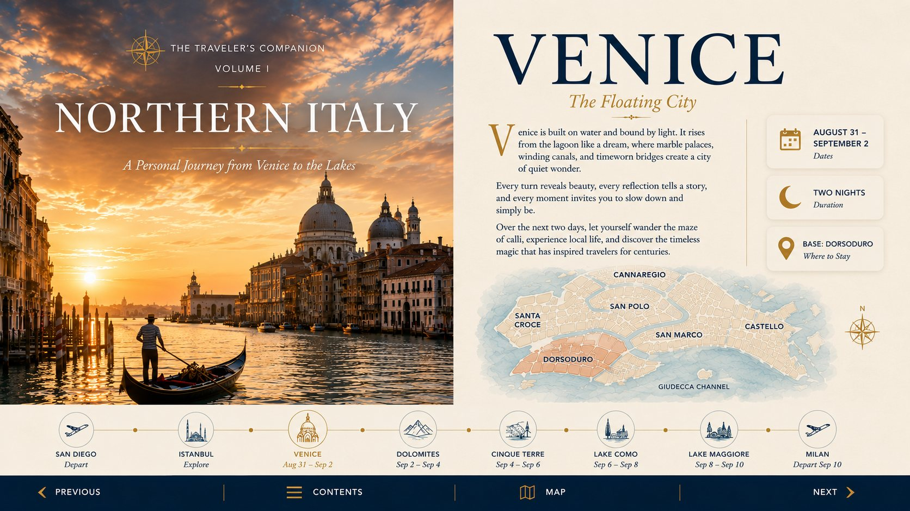

Next-level destination guide
Lake Como, intelligently paced.
Use ferry geometry, village timing and your Lenno base to see more without turning the lake into a race.
Open Lake Como →
Venice · Lake Como · Stresa · Milan · Optional Dolomites & Cinque Terre
The guide will automatically highlight the right day during the trip.
Jump directly to today’s plan, your next stay, transportation details, or the full illustrated destination guide.
Use ferry geometry, village timing and your Lenno base to see more without turning the lake into a race.
Open Lake Como →